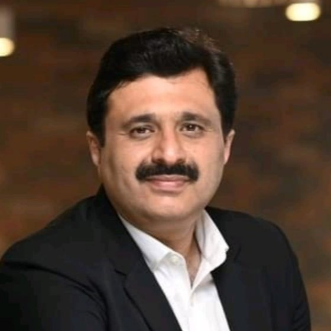

About SymVaya AI
Where humans and AI co-create the future.
SymVaya AI is an AI adoption and transformation company. We help enterprises move from AI ambition to measurable adoption by working on the technology, the business case, the governance and the people at the same time.
Two strands, one direction.
In our mark, the blue strand stands for artificial intelligence and the gold strand for human expertise. They meet, cross and rise as one. That is the outcome we work towards with every client: human and business value that can be measured.
What we hold ourselves to
Adoption is the measure
A system nobody uses is a cost, not a capability. We count usage, outcomes and people trained, not pilots launched.
Ecosystem first
We bring in specialist partners for training delivery, engineering and marketing, and keep a single point of accountability with you.
Skin in the game
Our larger engagements are priced on outcomes. If the transformation does not land, we do not collect in full.
Who we work with
Indian enterprises at every stage of AI adoption, starting from Delhi, Mumbai and Bengaluru.
Large enterprises
Scaling what works
Conglomerates, banks and manufacturers moving AI from scattered pilots to enterprise-wide programmes.
Global capability centres
From pilots to impact
GCCs with high AI usage that now need to show measurable business results to their parent companies.
Mid-market and family groups
Starting well
Growing businesses that want to get AI right the first time, with a partner who stays to the result.

Amit Mehta
Founder and CEO
Amit has spent more than three decades in enterprise technology, in senior sales and marketing roles at Dell, Microsoft, AWS, Google and Avaya.
Working with thousands of CXOs taught him that enterprises rarely struggle to buy technology; they struggle to make it stick. SymVaya AI is built to do the part that usually gets skipped: aligning the leadership team, redesigning the work and training the people, with fees tied to the result.
Amit also leads Enterprise AI Navigator, an initiative with 121connects that helps leadership teams benchmark and steer their AI programmes.